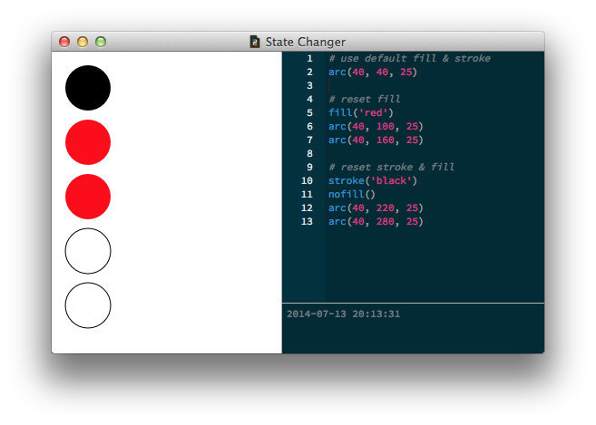
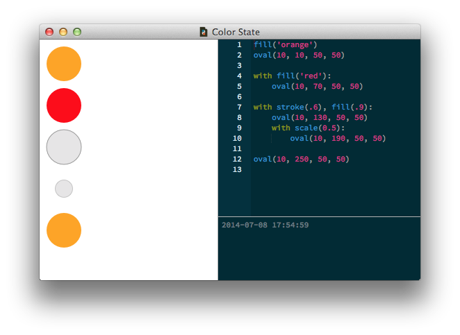
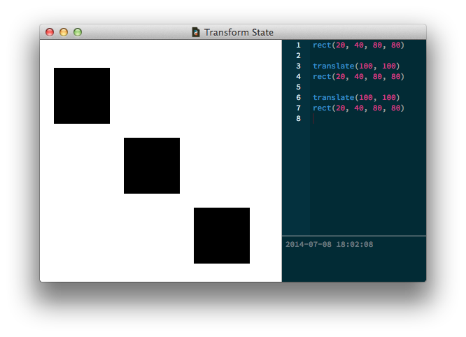
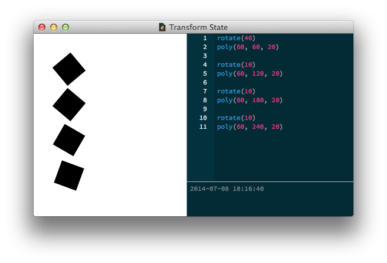
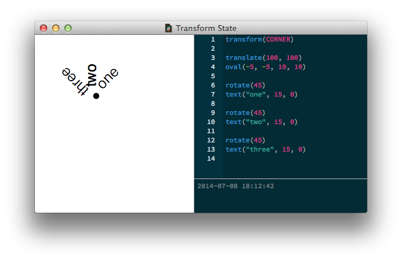
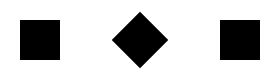
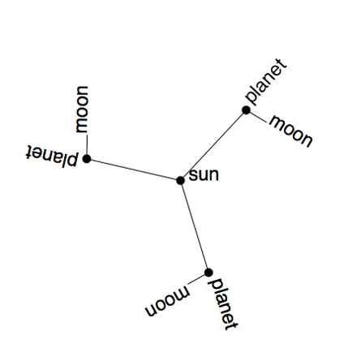

The PlotDevice canvas "remembers" the style and transformation settings used to draw primitives. These settings make up the "graphics state" and exist independently from the primitives you add to the canvas. This lets you keep drawing- and styling-related code separate and allows you to apply styles to groups of objects rather than needing to configure each one.
You can think of it like working an oil-painting. While at the easel, you can hold one type of brush and put one color of paint on it. All the strokes you paint on the canvas will have the same color and texture according to the thickness of the brush and color of paint. Naturally, you could paint with both hands and feet holding multiple brushes with multiple colors. But then things become chaotic.
So in PlotDevice you ‘paint’ with one color at a time. All of the elements you draw have the same color until you actively switch to a different one. Then all subsequent elements you draw will use that new color.
When you run a script, PlotDevice reads the code from top to bottom, like a recipe. When it encounters certain state-changing commands, it responds not through any immediately visible change, but instead by silently updating the canvas's "current" state. When you then draw a primitive, it will "inherit" the graphics state, including your modification.
Quite a few commands affect the graphics state, but they fall into four general categories:
For example, observe the following script. We start by setting the current fill to red and draw three red ovals. Then we change the stroke from transparent to black and the fill color to transparent. After making this change, we draw two ovals more ovals (which inherit the new style): 
By default, the current fill color is black. The pen's default "nib" size is 1. However, pen strokes won’t be visible until you define a current stroke color, which is transparent by default.
with statementMany PlotDevice commands support an optional "clean up" behavior. In fact nearly everything that affects the graphics state can be made into a temporary modification by calling the command as part of a with statement.
You can even combine multiple commands (separated by commas) and their effects will be limited to the drawing that happens inside the indented code-block. Once you return to the outer indentation-level, it's as if you never changed the graphics state: 
Commands that support the with statement are called "context managers" in Python lingo. Take a look at the Reference section's table of contents to see which commands can be used in this manner (they're all marked with dots). Then read their reference entries for details on how the with usage changes their behavior.
If necessary, you can break away from the "current" state and colorize and transform elements individually. Each of the primitive commands accepts optional parameters corresponding to state-changing commands:
fill and stroke for colorsnib, join, cap, and dash for line-drawingalpha, blend, and shadow for compositing effectsSo you could "override" the canvas's fill color with:
rect(20, 20, 100, 100, fill=(1, 0, 0))
or equivalently, you can save a reference to the object, then set its properties after it's been created, but before the canvas is rendered to the screen:
r = rect(20, 20, 100, 100) r.fill = color(1, 0, 0)
Both approaches result in a red rectangle regardless of the current fill color. You can similarly override the current transform by calling methods on the object:
r.translate(x, y=None) r.rotate(angle) r.scale(x, y=None) r.skew(x, y=None) r.reset()
The transformations are then applied only to rectangle r. Since each of the transform methods returns a reference to the primitive, you can even "chain" these calls:
r.reset().translate(100, 50).rotate(45)
With the text() command you can also override the global font() settings using the family, weight, size and italic parameters:
text("hello", 20, 20, family="Baskerville", size=24, italic=True)
You can think of the transformation state along the same lines as painting on a real-world canvas. The PlotDevice drawing canvas has an origin point at the top left corner (horizontal x=0 and vertical y=0). The translate() command lifts up the brush and puts it somewhere else. It changes the origin point.
When you say:
rect(20, 40, 80, 80)
a rectangle with a width and a height of 80 will be positioned 20 to the right and 40 down from the top left corner of the canvas.
But when you say:
translate(100, 100) rect(20, 40, 80, 80)
the origin point is no longer at the top left (x=0 and y=0). We translated it to x=100 and y=100. So the rectangle will be drawn 20 to the right and 40 down of the new origin point. The rectangle ends up at x=120 and y=140. The translate() command displaces the current origin point relative to the previous origin point. 
Rotation, scaling and skewing work incrementally as well. If you first rotate by 40 degrees, all the elements you subsequently draw will be rotated by 40 degrees. If you then rotate by 30 degrees, the current rotation becomes 70 (40 + 30). All subsequent elements will be rotated by 70 degrees. 
Likewise, if you keep putting scale(0.8) in your script the elements on the canvas become smaller and smaller. The second time you scale, the current scale becomes 0.64 (0.8 x 0.8), the third time it becomes 0.512 (0.64 x 0.8) and so on.
We haven’t discussed the transform() command
yet. As you may have already read in the reference you can switch it between CENTER and CORNER.
Centered transformation means that all shapes, paths, text and images rotate scale and skew
around their own center. As we would probably expect them to. Corner mode transformations means
that elements transform around the current origin point. This can be a difficult concept
to grasp.
By way of analogy, consider stars and planets. The sun is a star in space and our Earth orbits around it. You could think of the sun as the current origin point on the canvas (remember that this is not necessarily the top left) and the Earth as an oval that is rotating around it using a corner mode transform.
In the example below, we move the origin point to x=100 and y=100 and have three pieces of text rotate around it. Without the corner mode transform, they would rotate around their own center and it would be a lot more difficult to position them. 
The reset() command will reset all transformations from that point onward in your script.
The transform() command can also be used as part of a with block,
allowing you to create a state in a state. Inside of the block, all subsequent translate(),
rotate(), scale() and skew() commands are valid only until the end of the block. Then the
transformation state reverts to how things where before the transform(). This way
you can transform groups of elements that need to stay together.
Here’s a short example. Notice that the last rectangle isn’t rotated? That’s because the rotate() call happens within the transform() block and is reset after drawing the second rectangle.
|  | rect(20, 20, 40, 40)
with transform():
rotate(45)
rect(120, 20, 40, 40)
rect(220, 20, 40, 40)
|
Using a solar-system anaolgy, each transform() block is a bit like a moon orbiting around a planet. The planets orbit around a shared origin point (the sun), but regardless of where this is, the moon is always orbiting around its planet. To put it another way, each planet is a "local" origin point for its moon.

Play movie
size(450, 450)
speed(30)
def draw():
stroke(0)
transform(CORNER)
# This is the starting origin point,
# where we place the sun.
translate(225, 225)
oval(-5, -5, 10, 10)
text("sun", 10, 0)
for i in range(3):
# Each planet acts as a local origin for the orbiting moon.
# Comment out the transform() statement and see what happens.
with transform():
# This is a line with a length of 120,
# that starts at the sun and has an angle of i * 120.
rotate(FRAME+i*120)
line(0, 0, 120, 0)
# Move the origin to the end of the line.
translate(120, 0)
oval(-5, -5, 10, 10)
text("planet", 10, 0)
# Keep rotating around the local planet.
rotate(FRAME*6)
line(0, 0, 30, 0)
text("moon", 32, 0)
# The origin moves back to the sun outside of the block.